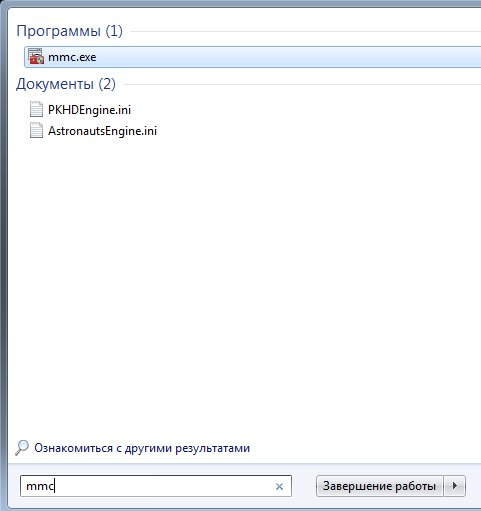
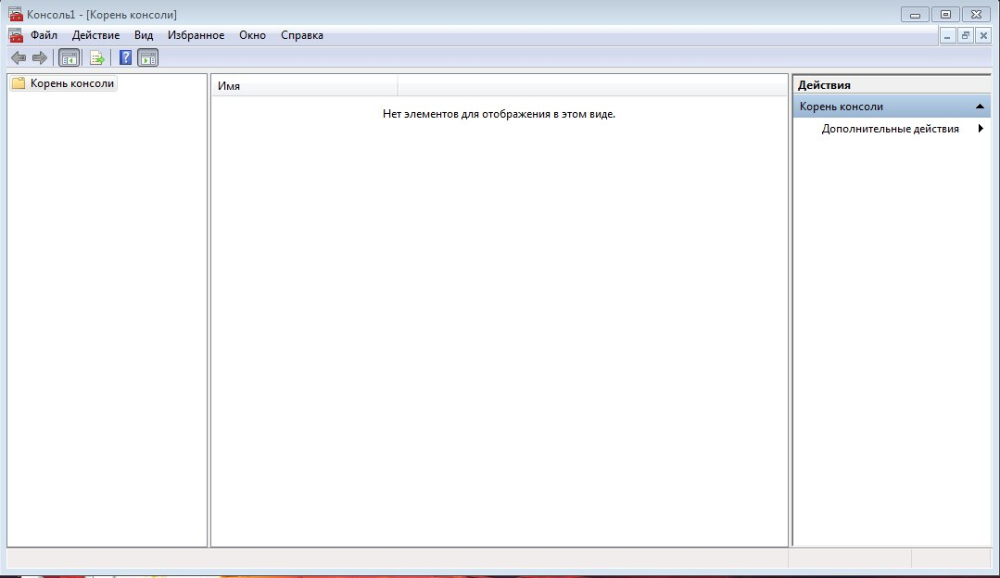
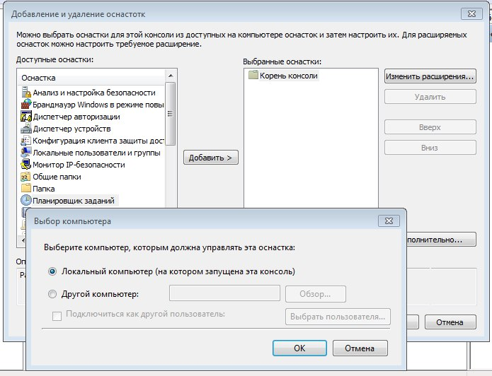
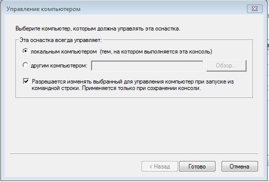
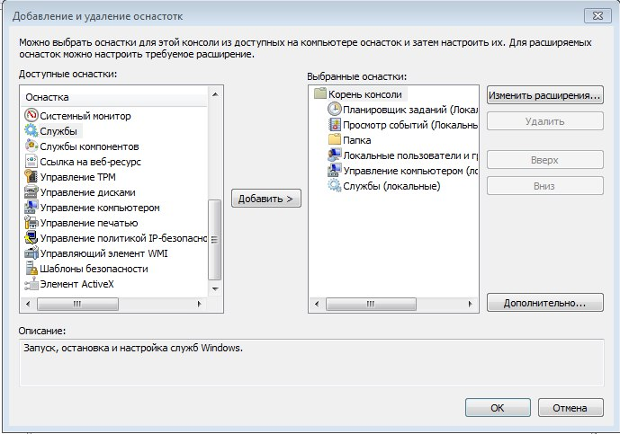
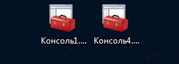
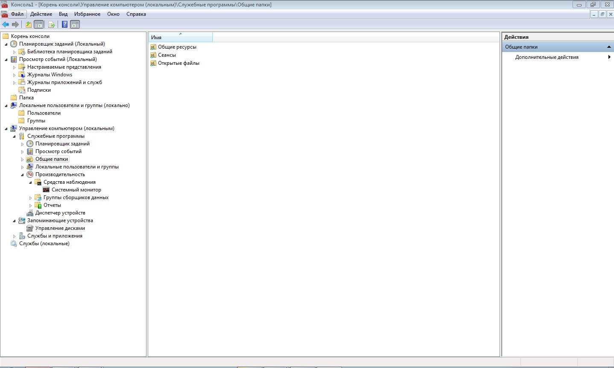
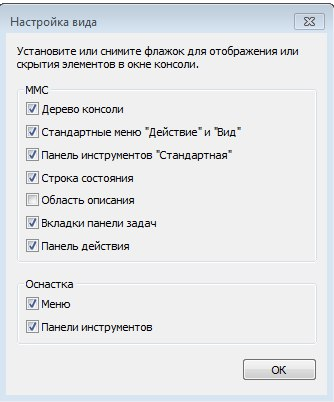
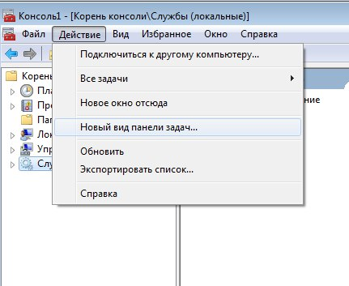

Начнём с понятия оснасток в Windows и Консоли управления Microsoft (mmc). Консоль MMC (Microsoft Management Console) — место для хранения и отображения средств администрирования, созданных корпорацией Майкрософт и другими поставщиками программного обеспечения. Эти средства называются оснастками и служат для управления оборудованием, программным обеспечением и сетевыми компонентами Windows. Некоторые средства, расположенные в папке «Администрирование», например «Управление компьютером», являются оснастками MMC.
Значит, в чем смысл и для чего все это нужно, а например представим себе ситуацию, что в организации существует домен Active Directory и рядовые пользователи не имеют прав локального администратора на своих рабочих станциях то есть они не могу зайти в панель управления и т.д., случается ситуация, что например нужно у пользователя поменять какие либо настройки, и сделать нужно сейчас, так что искать эти настройки в групповой политике нет времени. Что делать заходить под собой не вариант, так как нужно произвести изменения в другом профиле пользователя, и как открыть например оснастку Управление компьютером или Система. Вот вам и поможет знание названия msc windows оснасток и командной строки. Все что вам нужно это открыть командную строку от имени администратора и ввести нужное название msc оснастки. Ниже представлен список. Как видите открыв командную строку cmd.exe я для примера ввел значение открывающее панель управления с правами администратора системы. Так же помимо всего прочего можно через mmc создать консоль управления, в которую можно поместить несколько оснасток для управления компьютером, чтобы они были в одном месте и запускать только один файл, тогда даже знать конкретные нижеописанные имена оснасток не нужно.
Список оснаток:
Их список на самом деле намного больше, чем представлен тут, с полным списком можете ознакомиться сами. Так же некоторые могут отсутствовать в зависимости от версии Windows. Храняться они в c:\windows\system32. В описании будет дана ссылка на полный их список.
Вызвать их можно либо через консоль, написав их имя, либо через меню "Выполнить".
Так же как говорилось выше можно дабавить в mmc все необходимые инструменты то есть модульная система позволяет объединить в одном месте различные оснастки, это может быть и монитор ресурсов сервера и самый обычный браузер веб-страниц. Мы с вами будем рассматривать последнюю MMC версии 3.0 поставляемую с Windows Server 2003 SP2, Windows Server 2003 R2, Windows Vista, Windows 7 и Windows Server 2008. История консолей управления началась с MMC 1.0 и Windows 95.
Консоль управления находится по пути C:\Windows\System32\mmc.exe. И вызываться может либо как на скриншоте ниже, либо через меню "Выполнить".
Запуская консоль таким образом, мы откроем её в Авторском режиме, т.е. сможем вносить изменения в структуру. У консолей MMC два режима запуска: Авторский — в котором у нас будут полная свобода действий и мы сможем удалять и добавлять оснастки; Пользовательский — запрещающий изменения в структуре и подходящий для конечного пользователя.
Пустая консоль выглядит вот так:
Теперь создадим свою первую консоль, возьмём например вот такие оснастки
Подумал, что было бы лучше, были выбранны данные оснастки, приступим к созданию собственной консоли управления. Процесс добавления оснасток в консоль интуитивно понятен: Файл — Добавить или удалить оснастку... Вот такое окно у вас откроется, там в принципе все интуитивно понятно.
Так же при добавлении некоторых оснасток к консоль управления у них есть настройки, оставляйте там все локально, но как вы можете заметить описываемое средство служит для администрирования и удаленного управления машинами пользователей.
То есть в итоге полуиться что то типа такого. Эту консль можно сохранить, и она может быть вызванна. Только задумайтесб о том, что данный инструмент предоставляет нам в удаленном управлении несколькими машинами, почти безграничные возможности.
Вот в таком виде они сохраняться. Так же вы можете это сделать для себя, то есть вынести в отдельное место оснастки, которыми чаще всего пользуйтесь, чтобы каждый раз не искать их.
И теперь при запуске у нас получиться что то вроде этого. Взависимости от того, что вы туда добавили.
Через меню вид можно настроить себе выдачу информации и общий вид окна.
Так же помимо всего прочего можно менять инконки можно поменять внешний вид панели задач и добавить в неё те действия, которые могут пригодиться. Для этого делаем сначала клик по оснастке в корне консоли и проваливаемся в меню Действия — Новый вид панели задач... И там далее по пунктам настраиваете. Выбираете нужные действия и настроки к этим действиям, можно иконки у них сделать. И таким образом можно настраивать некоторые оснастки.
 мемасы крутятся, лабухи мутятся 1. рассказать, что такое оснатски, какие бывают, что такое mmc, пройтись по основным оснатскам, потом поработать с пользователями